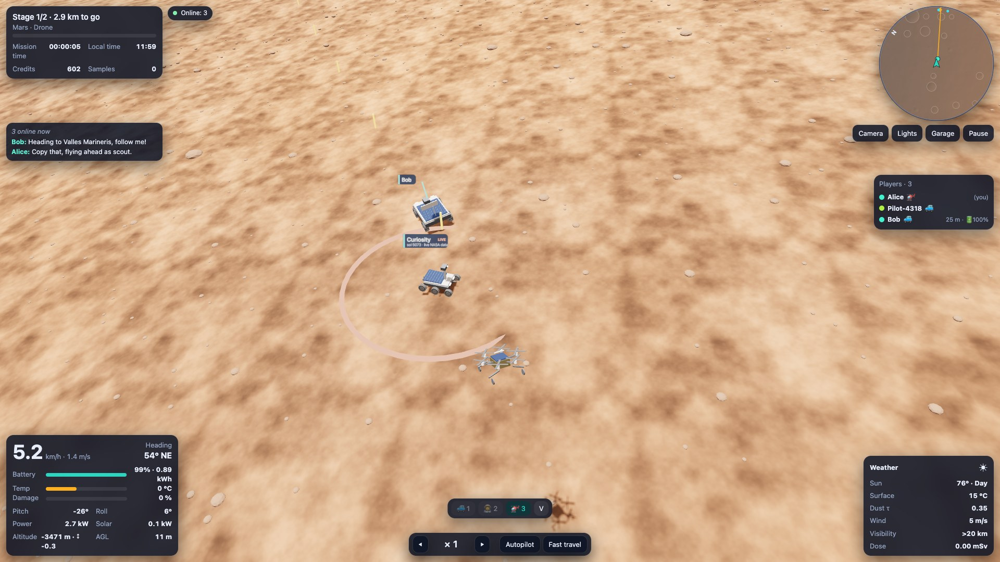
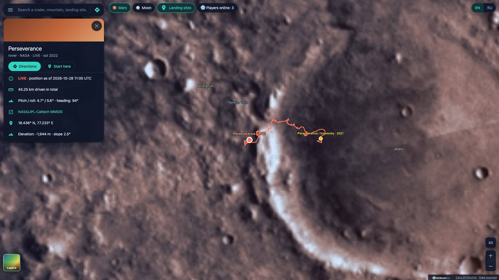

Drive
See the route before you walk it

Astronaut on foot · third person

Rover · battery, slope, weather
- Real MOLA terrain refined to a 4 m grid, with craters and rocks
- Soil physics: wheel sinkage, thrust, suspension, 100 Hz
- Leave the rover, walk, call a drone, switch control
- 61 automated checks pass; rollovers cut from 21 to 0 in 40 random drives
Terrain below the 463 m DEM resolution is a labelled statistical model5 / 7
Share
A live, shared Mars with the real rovers

Drone and rover pilots · live Curiosity

Perseverance · sol 2022 · LIVE

chat and map pingsenergy sharingcollisionsNASA/JPL MMGIS positionsworks on phones
Positions update after each rover drive (NASA publishes waypoints, not a continuous stream). No open feed exists for lunar vehicles or Ingenuity, so those are not shown as live.
Server relays state at 10 Hz · each client simulates its own physics6 / 7